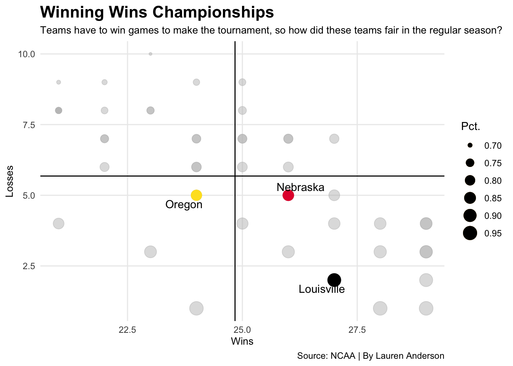

It’s that time of the year again when the best 64 teams in volleyball go head to head to battle for a spot in the Final Four. The tournament ends in Omaha which Nebraska is notorious for playing their best volleyball in order to play for a championship infront of a home crowd. Let’s take a look at what it is going to take for the Huskers to make it back to the 402.
Code
library(tidyverse)library(gt)library(ggrepel)library(rvest)blocksperseturl <-"https://www.ncaa.com/stats/volleyball-women/d1/current/team/49"digsperseturl <-"https://www.ncaa.com/stats/volleyball-women/d1/current/team/50"killsperseturl <-"https://www.ncaa.com/stats/volleyball-women/d1/current/team/46"WvsLpcturl <-"https://www.ncaa.com/stats/volleyball-women/d1/current/team/51"opphittingpcturl <-"https://www.ncaa.com/stats/volleyball-women/d1/current/team/911"blocksperset <- blocksperseturl %>%read_html() %>%html_nodes(xpath ='//*[@id="block-bespin-content"]/div[4]') %>%html_table()blocks<- blocksperset[[1]]digsperset <- digsperseturl %>%read_html() %>%html_nodes(xpath ='//*[@id="block-bespin-content"]/div[4]') %>%html_table()digs<- digsperset[[1]]killsperset <- killsperseturl %>%read_html() %>%html_nodes(xpath ='//*[@id="block-bespin-content"]/div[4]') %>%html_table()kills<- killsperset[[1]]WvsLpct <- WvsLpcturl %>%read_html() %>%html_nodes(xpath ='//*[@id="block-bespin-content"]/div[4]') %>%html_table()WvsL<- WvsLpct[[1]]opphittingpct <- opphittingpcturl %>%read_html() %>%html_nodes(xpath ='//*[@id="block-bespin-content"]/div[4]') %>%html_table()opphitting<- opphittingpct[[1]]WvsL %>%filter(Team =="Nebraska") -> NebraskaWvsL %>%filter(Team =="Oregon") -> OregonWvsL %>%filter(Team =="Kansas") -> KansasWvsL %>%filter(Team =="Louisville") -> Louisvilleggplot() +geom_point(data=WvsL, aes(x=W, y=L, size=Pct.), color="grey", alpha=.5) +geom_point(data=Nebraska, aes(x=W, y=L, size=Pct.), color="#E41C38")+geom_point(data=Kansas, aes(x=W, y=L, size=Pct.), color="#0051BA") +geom_point(data=Oregon, aes(x=W, y=L, size=Pct.), color="#FEE123") +geom_point(data=Louisville, aes(x=W, y=L, size=Pct.), color="#000000")+geom_vline(xintercept =24.84) +geom_hline(yintercept =5.68) +geom_text_repel(data=Nebraska, aes(x=W, y=L, label=Team))+geom_text_repel(data=Oregon, aes(x=W, y=L, label=Team))+geom_text_repel(data=Louisville, aes(x=W, y=L, label=Team))+labs(x="Wins", y="Losses", title="Winning Wins Championships", subtitle="Teams have to win games to make the tournament, so how did these teams fair in the regular season?", caption="Source: NCAA | By Lauren Anderson") +theme_minimal()+theme(plot.title =element_text(size =16, face ="bold"),axis.title =element_text(size =10), plot.subtitle =element_text(size=10), panel.grid.minor =element_blank())

The Huskers already defeated Delaware State and the Kansas Jayhawks to advance to the sweet sixteen where they will face off against Oregon. The Ducks suffered five losses this season, two of those losses were to unranked teams in Washington State and USC. If the Husker advance, and assuming the top seeded Louisville Cardinals advance to the elite eight those two teams will play each other on Saturday. The Cardinals, lead by former Husker coach Dani Busboom Kelly, finished the season with two losses, both were to teams ranked in the top 10.
It is a good thing Nebraska is known for their defensive game because both Oregon and Louisville finished the regular season in the top 10 offenses in the country. While Nebraska finished outside of the top 50 offenses in the country, yet still competed night in and night out in the Big Ten, the most difficult conference for volleyball. That fact alone should give credit to the defensive side of Nebraska’s game, but if it doesn’t these blocking numbers will show just how impressive part of their defense is.
Code
library(tidyverse)library(gt)library(ggrepel)blocksperseturl <-"https://www.ncaa.com/stats/volleyball-women/d1/current/team/49"blocksperset <- blocksperseturl %>%read_html() %>%html_nodes(xpath ='//*[@id="block-bespin-content"]/div[4]') %>%html_table()blocks<- blocksperset[[1]]filteredblock<- blocks%>%filter(Rank<21)filteredblock %>%gt() %>%cols_label(S ="Sets",`Block Solos`="Solo Blocks",`Block Assists`="Double Blocks",`Per Set`="Blocks Per Set" ) %>%tab_header(title ="Bringing The Block",subtitle ="Defense wins championships, and that starts with the blocking game." ) %>%tab_style(style =cell_text(color ="black", weight ="bold", align ="left"),locations =cells_title("title") ) %>%tab_style(style =cell_text(color ="black", align ="left"),locations =cells_title("subtitle") )%>%tab_source_note(source_note =md("**By:** Lauren Anderson | **Source:** NCAA") )%>%tab_style(locations =cells_column_labels(columns =everything()),style =list(cell_borders(sides ="bottom", weight =px(3)),cell_text(weight ="bold", size=12) ) )%>%tab_style(style =list(cell_fill(color ="#E41C38"),cell_text(color ="#FDF2D9") ),locations =cells_body(rows = Team =="Nebraska") )%>%tab_style(style =list(cell_fill(color ="#AD0000"),cell_text(color ="#000000") ),locations =cells_body(rows = Team =="Louisville") )
Bringing The Block
Defense wins championships, and that starts with the blocking game.
Rank
Team
Sets
Solo Blocks
Double Blocks
Blocks Per Set
1
Maryland
119
55
683
3.33
2
Wisconsin
103
33
557
3.02
3
Louisville
100
57
486
3.00
4
Towson
109
43
543
2.89
5
Minnesota
103
34
519
2.85
6
Nebraska
104
30
515
2.76
7
San Diego
105
57
465
2.76
8
Penn St.
120
72
514
2.74
9
Florida
106
55
470
2.74
10
Stanford
106
31
512
2.71
11
Lehigh
107
39
496
2.68
12
Northern Ky.
115
65
485
2.67
13
James Madison
107
100
370
2.66
14
Sacramento St.
120
74
491
2.66
15
Denver
117
56
511
2.66
16
Kansas
111
69
450
2.65
17
Colorado
114
63
477
2.64
18
Georgia
120
31
572
2.64
19
Weber St.
106
64
432
2.64
20
Purdue
119
61
506
2.64
By: Lauren Anderson | Source: NCAA
Nebraska has the number one blocker in the country in Kaitlyn Hord who averages 1.60 blocks a set on her own. Add freshman Bekka Allick into the mix as well as Batenhorst and Lauenstein and Nebraska has built a force to be reckoned with at the net. But so has Louisville, who averages around three blocks a set. Oregon on the other hand doesn’t have a team who competes in the top 50 when it comes to blocking. If Nebraska can win the blocking game against Oregon they have a chance to shine and continue into the elite eight.
A possible matchup between Louisville and Nebraska is what every volleyball fan dreams of, an even match up between a one and a two seed for a trip to Omaha, this game could truly go to either team, it is going to come down to whoever wants it more.